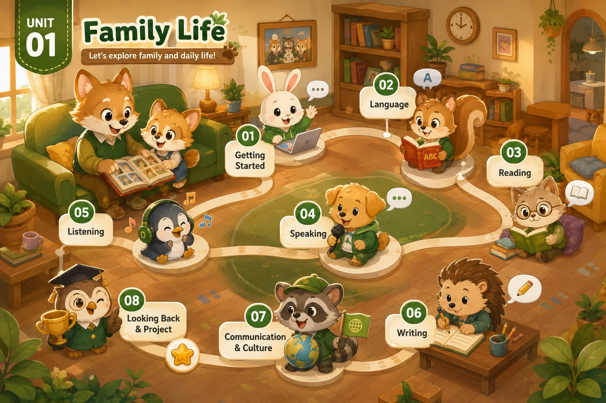

Lesson 1 · Getting Started Lesson 2 · Language — chưa có bài giảng Lesson 3 · Reading — chưa có bài giảng Lesson 4 · Speaking — chưa có bài giảng Lesson 5 · Listening — chưa có bài giảng Lesson 6 · Writing — chưa có bài giảng Lesson 7 · Communication and Culture — chưa có bài giảng Lesson 8 · Looking Back and Project — chưa có bài giảngBấm vào thẻ tiết để mở bài giảng. Hiện mới dựng Lesson 1 — Getting Started; các thẻ mờ là phần chưa có bài.